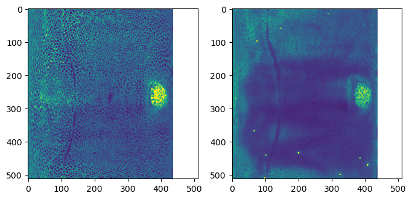

from tqdm.notebook import tqdmShrink-wrapping
Morph one surface mesh onto another by projecting each vertex to closest point on target surface. Part of pipeline for dynamic data.
This notebook builds the tools for automated mesh “shrink-wrapping” (setting vertex positions of one mesh to the closest point on another mesh). This is a part of the pipeline for dynamic surfaces discussed in tutorial 8. Shrink-wrapping can also be done interactively in blender, using the shrink-wrap modifier.
Loading and segmenting the dataset
We will use the same dataset - a Drosophila example - as in tutorial 4.
metadata_dict = {'filename': 'datasets/wrapping_example/Drosophila_CAAX-mCherry',
'resolution_in_microns': (1.05, 1.05, 1.05), # lightsheet data has isotropic resolution
'subsampling_factors': (1/2, 1/2, 1/2),
}image = tcio.adjust_axis_order(tcio.imread(f"{metadata_dict['filename']}.tif"))
print("image shape:", image.shape) # image shape - spatial axes are in z-x-y orderimage shape: (1, 190, 509, 188)3d segmentation / Meshing
Already done - we’ll just read in the results.
Registration
Using the tools from notebook 4a, compute an affine registration of the reference to the data mesh.
mesh_data = tcmesh.ObjMesh.read_obj(f"{metadata_dict['filename']}_mesh_remeshed.obj")
mesh_ref = tcmesh.ObjMesh.read_obj(f"datasets/wrapping_example/Drosophila_reference.obj")Warning: readOBJ() ignored non-comment line 4:
o embryo_recttrafo_centroid_intertia, _ = tcreg.align_by_centroid_and_intertia(mesh_ref.vertices, mesh_data.vertices,
q=0.01, shear=True)
trafo_icp, _, _ = tcreg.icp(mesh_ref.vertices, mesh_data.vertices, initial=trafo_centroid_intertia,
threshold=1e-4, max_iterations=100, include_scaling=True, n_samples=5000)# We now save the pre-registered mesh. Note that we want to transform both our
# mesh coordinates and the corresponding normals, as well as potentially flip face orientation
mesh_registered = mesh_ref.apply_affine_to_mesh(trafo_icp)
mesh_registered.name = "Drosophila_reference_preregistered"
mesh_registered.write_obj(f"datasets/wrapping_example/Drosophila_reference_registered.obj")Shrink-wrapping using libigl
# Load source and target mesh
mesh_target = tcmesh.ObjMesh.read_obj("datasets/wrapping_example/Drosophila_CAAX-mCherry_mesh_remeshed.obj")
mesh_source = tcmesh.ObjMesh.read_obj("datasets/wrapping_example/Drosophila_reference_registered.obj")Warning: readOBJ() ignored non-comment line 1:
o Drosophila_reference_preregistered# compute closest point on target mesh for each source vertex
distances, indices, points = igl.point_mesh_squared_distance(mesh_source.vertices,
mesh_target.vertices, mesh_target.tris)# points are closest points on the surface, not necessarily vertices
np.linalg.norm(points[10]-mesh_target.vertices, axis=1).min()1.927821820512808# indices are triangle indices
indices.max(), mesh_target.vertices.shape[0](16845, 8425)mesh_wrapped = tcmesh.ObjMesh(points, mesh_source.faces, texture_vertices=mesh_source.texture_vertices,
normals=None, name=mesh_source.name)
mesh_wrapped.set_normals()mesh_wrapped.write_obj("datasets/wrapping_example/Drosophila_reference_wrapped_igl.obj")shrinkwrap_igl
shrinkwrap_igl (mesh_source, mesh_target, n_iter_smooth_target=10, n_iter_smooth_wrapped=10)
*Shrink-wrap the source mesh onto the target mesh using trimesh.
Sets the vertex positions of mesh_source to the closest point on the surface of mesh_target (not necessarily a vertex). Optionally, smooth the target mesh and the wrapped mesh for smoother results using a Taubin filter (recommended). Gives out a warning if the shrink-wrapping flips any vertex normals, which can indicate problems.
The shrinkwrapped mesh still has the UV maps of the source mesh, and so can be used to compute cartographic projections. Assumes mesh is triangular.*
| Type | Default | Details | |
|---|---|---|---|
| mesh_source | tcmesh.ObjMesh | Mesh to be deformed | |
| mesh_target | tcmesh.ObjMesh | Mesh with the target shape | |
| n_iter_smooth_target | int | 10 | Taubin smoothing iterations for target |
| n_iter_smooth_wrapped | int | 10 | Taubin smoothing iterations for shrinkwrapped mesh, after shrinkwrapping |
| Returns | tcmesh.ObjMesh |
mesh_wrapped = shrinkwrap_igl(mesh_source, mesh_target)
mesh_wrapped.write_obj("datasets/wrapping_example/Drosophila_reference_wrapped_igl.obj")CPU times: user 2.09 s, sys: 51.9 ms, total: 2.14 s
Wall time: 2.04 sAttribute copying
We can use the shrink-wrap technique to copy over per-vertex attributes from one mesh to another. This is nothing other than barycentric interpolation, and we can use interpolation.interpolate_barycentric!
UV projection
To see how well all of this has worked, let’s use the wrapped mesh to generate UV projections.
normal_offsets = np.array([-4, -2, 0, 2]) ##np.linspace(-5, 2, 8) # in microns
metadata_dict["normal_offsets"] = normal_offsets # add the info to the metadata
uv_grid_steps = 512tcio.save_dict_to_json(f"{metadata_dict['filename']}_metadata.json", metadata_dict)projected_data_wrapped, projected_coordinates_wrapped, projected_normals_wrapped = tcinterp.create_cartographic_projections(
image=f"{metadata_dict['filename']}.tif",
mesh=f"datasets/wrapping_example/Drosophila_reference_wrapped_igl.obj",
resolution=metadata_dict["resolution_in_microns"],
normal_offsets=normal_offsets,
uv_grid_steps=uv_grid_steps,
use_fallback=False) # don't worry about warning - it just looks like the reference mesh has a UV map with 'flipped' orientation./home/nikolas/Documents/UCSB/streichan/numerics/code/python code/jupyter notebooks/blender-tissue-cartography/blender_tissue_cartography/interpolation.py:215: RuntimeWarning: UV map has self-intersections, 111104 flipped triangles. Try use_fallback=True?
warnings.warn("UV map has self-intersections, {} flipped triangles. Try use_fallback=True?".format(# show the projected data - looks good!
fig, (ax1, ax2) = plt.subplots(figsize=(8,8), ncols=2)
ax1.imshow(projected_data_wrapped[0, 0], vmax=10000)
ax2.imshow(projected_data_wrapped[0, 2], vmax=10000)